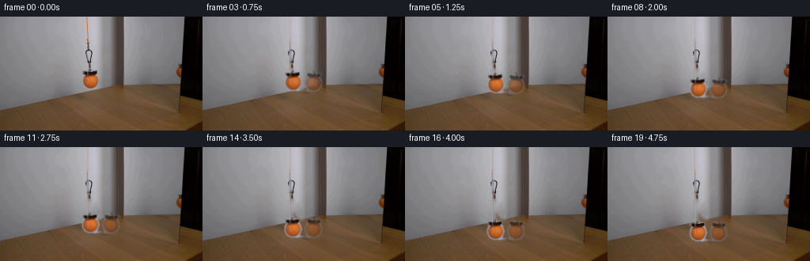
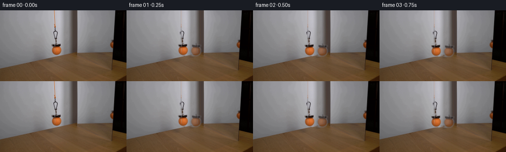
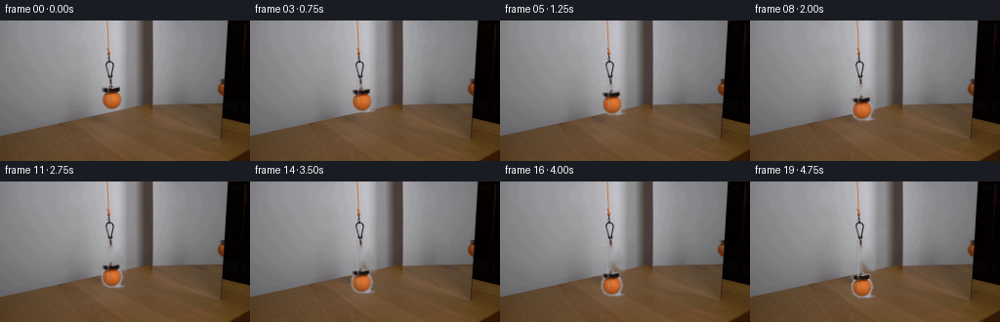
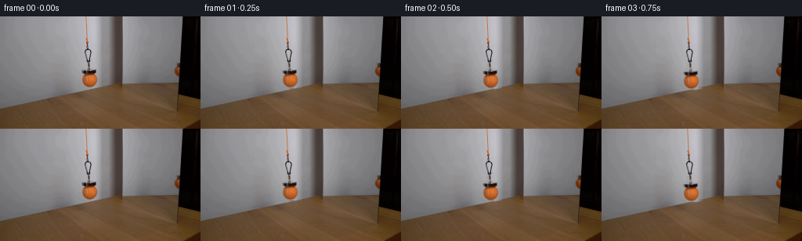

CODING AGENTS AS PIXEL WORLD MODELS
traex/GPT-5.6-Sol · 0117
点击播放 · 原生 RGB 像素
逐轮保存的候选
回放视频、检查图与代码变化。
每份候选均可单独播放。实际图片检查记录在下方工具轨迹中。
候选 01播放与检查图
点击播放 · 原生 RGB 像素


展开代码变化
--- 上一保存版本
+++ 本次保存版本
@@ -0,0 +1,134 @@
+"""Generate a locked-camera continuation by moving the suspended foreground
+assembly and its slightly dimmer mirror image down the mirror surface."""
+from pathlib import Path
+import cv2
+import numpy as np
+from PIL import Image
+import artifact_io
+
+ROOT = Path(__file__).resolve().parent
+
+def soft_component_mask(rgb):
+ """Segment the vivid orange ball from the neutral, smoothly lit mirror."""
+ hsv = cv2.cvtColor(rgb, cv2.COLOR_RGB2HSV)
+ # Main ball (centre about 115,80): saturation is a very reliable discriminator.
+ ball = ((hsv[:,:,1] > 38) & (np.indices(hsv.shape[:2])[1] >= 102) &
+ (np.indices(hsv.shape[:2])[1] <= 126) &
+ (np.indices(hsv.shape[:2])[0] >= 67) &
+ (np.indices(hsv.shape[:2])[0] <= 92)).astype(np.uint8)
+ ball = cv2.morphologyEx(ball, cv2.MORPH_CLOSE, np.ones((5,5),np.uint8))
+ ball = cv2.dilate(ball, np.ones((3,3),np.uint8), iterations=1)
+ # Include the little dark magnet/collar immediately above the ball.
+ yy,xx=np.indices(hsv.shape[:2])
+ collar = ((xx>=103)&(xx<=124)&(yy>=67)&(yy<=74)&
+ ((rgb.mean(2)<135)|(hsv[:,:,1]>28))).astype(np.uint8)
+ mask=np.maximum(ball,collar)
+ return cv2.GaussianBlur(mask.astype(np.float32),(0,0),0.65).clip(0,1)
+
+def inpaint_background(rgb, mask, bbox, radius=5):
+ x0,y0,x1,y1=bbox
+ m=np.zeros(mask.shape,np.uint8)
+ m[y0:y1,x0:x1]=(mask[y0:y1,x0:x1]>.06).astype(np.uint8)*255
+ # Broadly mask the physical object, but preserve unrelated scene features.
+ return cv2.inpaint(rgb, m, radius, cv2.INPAINT_TELEA)
+
+def shifted_layer(src, alpha, dx, dy):
+ M=np.float32([[1,0,dx],[0,1,dy]])
+ lay=cv2.warpAffine(src,M,(src.shape[1],src.shape[0]),flags=cv2.INTER_LINEAR,
+ borderMode=cv2.BORDER_CONSTANT,borderValue=0)
+ a=cv2.warpAffine(alpha,M,(src.shape[1],src.shape[0]),flags=cv2.INTER_LINEAR,
+ borderMode=cv2.BORDER_CONSTANT,borderValue=0)
+ return lay,a
+
+def composite(base, layer, alpha):
+ a=alpha[...,None]
+ return np.clip(base*(1-a)+layer*a,0,255)
+
+def main():
+ first=np.asarray(Image.open(ROOT/'first_frame.png').convert('RGB'))
+ H,W=first.shape[:2]
+ frames=[first.copy()]
+
+ # Extract original foreground ball and cord. Cord is the narrow orange line
+ # at x=110 descending from the top of the image.
+ ball_a=soft_component_mask(first)
+ ball_rgb=first.astype(np.float32)
+ cord_x=110
+
+ # The reflected ball is subtly visible behind/alongside the real setup. Build
+ # it from the same photographed texture, horizontally mirrored and optically
+ # softened/dimmed as a real mirror reflection would be.
+ refl_rgb=ball_rgb[:,::-1].copy() # texture flip used after local extraction below
+ # local flipped texture around its own center rather than whole-frame location
+ patch=first[66:94,101:129].copy()[:,::-1]
+ pm=ball_a[66:94,101:129][:,::-1]
+ ref_layer=np.zeros_like(first,dtype=np.float32)
+ ref_a=np.zeros((H,W),np.float32)
+ # reflection appears to the right, on the mirror, with a small perspective offset
+ rx,ry=126,67
+ ref_layer[ry:ry+28,rx:rx+28]=patch.astype(np.float32)*0.73 + np.array([28,28,30],np.float32)*0.27
+ ref_a[ry:ry+28,rx:rx+28]=pm*0.62
+ ref_layer=cv2.GaussianBlur(ref_layer,(0,0),0.45)
+ ref_a=cv2.GaussianBlur(ref_a,(0,0),0.6)
+
+ # Clean plates for the vacated object and the moving cord. The mirror itself
+ # remains completely fixed, preserving the locked-off camera.
+ plate=inpaint_background(first,ball_a,(100,66,130,95),4).astype(np.float32)
+ # Reconstruct only the slender cord's old pixels when its lower portion vacates.
+ cordmask=np.zeros((H,W),np.uint8)
+ cordmask[0:70,109:113]=255
+ cord_plate=cv2.inpaint(plate.astype(np.uint8),cordmask,3,cv2.INPAINT_TELEA).astype(np.float32)
+
+ # Copy a long, real photographed cord texture; this maintains lighting/noise.
+ cord_col=first[:,109:113].astype(np.float32)
+ for i in range(1,20):
+ t=i/19.0
+ # Slow deliberate lowering: gentle ease-in/out, total 27 px over 4.75 s.
+ ease=t*t*(3.0-2.0*t)
+ dy=27.0*ease
+ # tiny subpixel lateral settling, not camera motion
+ dx=0.35*np.sin(np.pi*t)*np.sin(2*np.pi*t)
+
+ fr=plate.copy()
+ # remove the old visible cord then redraw it lengthened to the moving collar
+ fr[:70,107:114]=cord_plate[:70,107:114]
+ # anti-aliased cord centerline, sampled color varying along its actual length
+ cord_end=int(round(69+dy))
+ overlay=np.zeros_like(fr)
+ ca=np.zeros((H,W),np.float32)
+ xi=cord_x+dx
+ for y in range(0,min(cord_end,H)):
+ # use original photographed orange cord color; below original endpoint,
+ # continue the last stable sample.
+ sy=min(y,65)
+ color=cord_col[sy].mean(0)
+ x0=int(np.floor(xi)); f=xi-x0
+ if 0<=x0<W: overlay[y,x0]=color; ca[y,x0]=0.72*(1-f)
+ if 0<=x0+1<W: overlay[y,x0+1]=color; ca[y,x0+1]=0.72*f+0.28
+ ca=cv2.GaussianBlur(ca,(0,0),0.45)
+ fr=composite(fr,overlay,ca)
+
+ # mirror image first (behind the real object), following the same lowering.
+ rl,ra=shifted_layer(ref_layer,ref_a,0,dy*0.965)
+ fr=composite(fr,rl,ra)
+ # A dim orange reflected cord parallel to the real one.
+ rca=np.zeros((H,W),np.float32); rol=np.zeros_like(fr)
+ rxi=149.0
+ for y in range(0,min(int(70+dy),H)):
+ # mirror cord is subdued by glazing
+ rol[y,int(rxi)]=np.array([134,91,65],np.float32)
+ rca[y,int(rxi)]=0.25
+ rca=cv2.GaussianBlur(rca,(0,0),0.6)
+ fr=composite(fr,rol,rca)
+
+ # Real photographed ball/magnet, preserving all seam and surface detail.
+ bl,ba=shifted_layer(ball_rgb,ball_a,dx,dy)
+ fr=composite(fr,bl,ba)
+ frames.append(np.clip(np.rint(fr),0,255).astype(np.uint8))
+
+ arr=np.stack(frames).astype(np.uint8)
+ assert np.array_equal(arr[0],first)
+ artifact_io.save(arr,ROOT)
+
+if __name__=='__main__':
+ main()
候选 02播放与检查图
点击播放 · 原生 RGB 像素

展开代码变化
--- 上一保存版本
+++ 本次保存版本
@@ -55,31 +55,12 @@
ball_rgb=first.astype(np.float32)
cord_x=110
- # The reflected ball is subtly visible behind/alongside the real setup. Build
- # it from the same photographed texture, horizontally mirrored and optically
- # softened/dimmed as a real mirror reflection would be.
- refl_rgb=ball_rgb[:,::-1].copy() # texture flip used after local extraction below
- # local flipped texture around its own center rather than whole-frame location
- patch=first[66:94,101:129].copy()[:,::-1]
- pm=ball_a[66:94,101:129][:,::-1]
- ref_layer=np.zeros_like(first,dtype=np.float32)
- ref_a=np.zeros((H,W),np.float32)
- # reflection appears to the right, on the mirror, with a small perspective offset
- rx,ry=126,67
- ref_layer[ry:ry+28,rx:rx+28]=patch.astype(np.float32)*0.73 + np.array([28,28,30],np.float32)*0.27
- ref_a[ry:ry+28,rx:rx+28]=pm*0.62
- ref_layer=cv2.GaussianBlur(ref_layer,(0,0),0.45)
- ref_a=cv2.GaussianBlur(ref_a,(0,0),0.6)
+ # The source crop already contains the mirror's aligned/overlapping image;
+ # keep that photographed optical detail together as one moving assembly.
- # Clean plates for the vacated object and the moving cord. The mirror itself
- # remains completely fixed, preserving the locked-off camera.
+ # Clean only the region vacated by the object. Everything elseâincluding the
+ # original upper cord and mirrorâstays pixel locked.
plate=inpaint_background(first,ball_a,(100,66,130,95),4).astype(np.float32)
- # Reconstruct only the slender cord's old pixels when its lower portion vacates.
- cordmask=np.zeros((H,W),np.uint8)
- cordmask[0:70,109:113]=255
- cord_plate=cv2.inpaint(plate.astype(np.uint8),cordmask,3,cv2.INPAINT_TELEA).astype(np.float32)
-
- # Copy a long, real photographed cord texture; this maintains lighting/noise.
cord_col=first[:,109:113].astype(np.float32)
for i in range(1,20):
t=i/19.0
@@ -90,36 +71,20 @@
dx=0.35*np.sin(np.pi*t)*np.sin(2*np.pi*t)
fr=plate.copy()
- # remove the old visible cord then redraw it lengthened to the moving collar
- fr[:70,107:114]=cord_plate[:70,107:114]
- # anti-aliased cord centerline, sampled color varying along its actual length
- cord_end=int(round(69+dy))
+ # Preserve the photographed upper cord, extending only its lower end as
+ # the assembly is let down. Subpixel coverage provides natural antialiasing.
overlay=np.zeros_like(fr)
ca=np.zeros((H,W),np.float32)
xi=cord_x+dx
- for y in range(0,min(cord_end,H)):
- # use original photographed orange cord color; below original endpoint,
- # continue the last stable sample.
+ cord_end=int(round(69+dy))
+ for y in range(60,min(cord_end,H)):
sy=min(y,65)
color=cord_col[sy].mean(0)
x0=int(np.floor(xi)); f=xi-x0
- if 0<=x0<W: overlay[y,x0]=color; ca[y,x0]=0.72*(1-f)
- if 0<=x0+1<W: overlay[y,x0+1]=color; ca[y,x0+1]=0.72*f+0.28
- ca=cv2.GaussianBlur(ca,(0,0),0.45)
+ if 0<=x0<W: overlay[y,x0]=color; ca[y,x0]=0.82*(1-f)
+ if 0<=x0+1<W: overlay[y,x0+1]=color; ca[y,x0+1]=0.82*f+0.18
+ ca=cv2.GaussianBlur(ca,(0,0),0.42)
fr=composite(fr,overlay,ca)
-
- # mirror image first (behind the real object), following the same lowering.
- rl,ra=shifted_layer(ref_layer,ref_a,0,dy*0.965)
- fr=composite(fr,rl,ra)
- # A dim orange reflected cord parallel to the real one.
- rca=np.zeros((H,W),np.float32); rol=np.zeros_like(fr)
- rxi=149.0
- for y in range(0,min(int(70+dy),H)):
- # mirror cord is subdued by glazing
- rol[y,int(rxi)]=np.array([134,91,65],np.float32)
- rca[y,int(rxi)]=0.25
- rca=cv2.GaussianBlur(rca,(0,0),0.6)
- fr=composite(fr,rol,rca)
# Real photographed ball/magnet, preserving all seam and surface detail.
bl,ba=shifted_layer(ball_rgb,ball_a,dx,dy)
候选 03播放与检查图
点击播放 · 原生 RGB 像素


展开代码变化
--- 上一保存版本 +++ 本次保存版本 @@ -1,5 +1,5 @@ """Generate a locked-camera continuation by moving the suspended foreground -assembly and its slightly dimmer mirror image down the mirror surface.""" +assembly and its mirror image down the mirror surface.""" from pathlib import Path import cv2 import numpy as np
可观测工具轨迹
实际执行的命令与返回图片。
命令 1exit 0
/bin/bash -lc "cat prompt.txt && printf '\\n---RULES---\\n' && cat GENERATION_RULES.md"
命令 2exit 127
/bin/bash -lc "find . -maxdepth 2 -type f -printf '%p %s bytes\\n' | sort && file first_frame.png"
命令 3exit 0
/bin/bash -lc "python - <<'PY'
from PIL import Image
import numpy as np
im=np.array(Image.open('first_frame.png').convert('RGB'))
print(im.shape, im.dtype, im.min(), im.max())
print('mean', im.mean((0,1)), 'std', im.std((0,1)))
# colors quantiles
for c in range(3): print(c,np.percentile(im[:,:,c],[0,1,5,10,25,50,75,90,95,99,100]))
try:
import cv2; print('cv2',cv2.__version__)
except Exception as e: print('no cv2',e)
PY"命令 4exit 0
/bin/bash -lc "cat artifact_io.py; python - <<'PY'
import cv2,numpy as np
from PIL import Image
im=np.array(Image.open('first_frame.png').convert('RGB'))
# kmeans color clusters
x=im.reshape(-1,3).astype(np.float32)
crit=(cv2.TERM_CRITERIA_EPS+cv2.TERM_CRITERIA_MAX_ITER,100,.2)
_,lab,cen=cv2.kmeans(x,12,None,crit,10,cv2.KMEANS_PP_CENTERS)
for i,(c,n) in enumerate(zip(cen,np.bincount(lab.ravel()))): print(i,n,np.round(c).astype(int))
# bounding boxes threshold likely tennis yellow / orange cord
for name,mask in [
('yellow', (im[:,:,0]>100)&(im[:,:,1]>90)&(im[:,:,0]>im[:,:,2]*1.4)&(im[:,:,1]>im[:,:,2]*1.3)),
('orange',(im[:,:,0]>120)&(im[:,:,0]>im[:,:,1]*1.4)&(im[:,:,1]>im[:,:,2]*1.4)),
('dark',(im.mean(2)<30)),('bright',(im.mean(2)>175))]:
ys,xs=np.where(mask);print(name,len(xs), (xs.min(),ys.min(),xs.max(),ys.max()) if len(xs) else None)
# connected comps
n,l,st,cent=cv2.connectedComponentsWithStats(mask.astype('uint8'),8)
comps=sorted([(s[4],tuple(s[:4]),tuple(np.round(c,1))) for s,c in zip(st[1:],cent[1:])],reverse=True)[:15]
print(comps)
PY"命令 5exit 0
/bin/bash -lc "python - <<'PY'
import cv2, numpy as np
im=cv2.imread('first_frame.png'); gray=cv2.cvtColor(im,cv2.COLOR_BGR2GRAY)
for p in [(1.1,10,80,5,20),(1.2,8,50,4,25),(1.05,5,80,3,30)]:
cs=cv2.HoughCircles(gray,cv2.HOUGH_GRADIENT,dp=p[0],minDist=p[1],param1=p[2],param2=p[3],minRadius=3,maxRadius=p[4])
print(p, None if cs is None else np.round(cs[0]).astype(int).tolist()[:100])
# edges contours candidate circular
ed=cv2.Canny(gray,50,120)
contours,_=cv2.findContours(ed,cv2.RETR_LIST,cv2.CHAIN_APPROX_SIMPLE)
a=[]
for c in contours:
x,y,w,h=cv2.boundingRect(c); area=cv2.contourArea(c); per=cv2.arcLength(c,True)
if w>=5 and h>=5 and w<60 and h<60:
a.append((round(4*np.pi*area/per**2,2) if per else 0,round(area,1),x,y,w,h))
print('contours',sorted(a,reverse=True)[:100])
# regions 16x12 avg RGB and std grayscale text
rgb=im[:,:,::-1]
for y in range(0,144,12):
print('row',y, ['%03d/%02d'%(rgb[y:y+12,x:x+16].mean(),rgb[y:y+12,x:x+16].std()) for x in range(0,256,16)])
PY"命令 6exit 0
/bin/bash -lc "python - <<'PY'
from PIL import Image
import numpy as np
im=np.array(Image.open('first_frame.png').convert('RGB'))
# print sample RGB on grid x every 8 y every 8 as color categories based manually
# luminance ascii detailed with color symbols: O orange/yellow, K black, neutral brightness digits, brown b
for y in range(0,144,4):
s=''
for x in range(0,256,4):
p=im[y:y+4,x:x+4].mean((0,1)); r,g,b=p; v=p.mean()
if r>g*1.35 and r>b*1.5 and r>90: c='O'
elif r>g*1.15 and g>b*1.2 and r>70: c='b'
elif max(p)-min(p)<15: c=' .:-=+*#%@'[min(9,int(v/22))]
elif v<25:c='K'
elif b>r*1.15:c='B'
else:c='x'
s+=c
print(f'{y:03} {s}')
# key column avg and gradient
print('columns x meanRGB std edge')
gray=im.mean(2); gx=np.abs(np.diff(gray,axis=1)).mean(0)
for x in range(0,256,4):
p=im[:,x:x+4].mean((0,1)); print(x,np.round(p).astype(int),round(im[:,x:x+4].std(),1),round(gx[x:min(x+4,255)].mean(),1))
PY"命令 7exit 0
/bin/bash -lc "python - <<'PY'
import cv2,numpy as np
from PIL import Image
im=np.array(Image.open('first_frame.png').convert('RGB'))
hsv=cv2.cvtColor(im,cv2.COLOR_RGB2HSV)
for cond,name in [((hsv[:,:,1]>30),'sat30'),((hsv[:,:,1]>50),'sat50'),((hsv[:,:,1]>80),'sat80'),(((hsv[:,:,0]>10)&(hsv[:,:,0]<45)&(hsv[:,:,1]>40)),'warm'),(((hsv[:,:,0]>20)&(hsv[:,:,0]<80)&(hsv[:,:,1]>25)),'yellowgreen')]:
n,l,st,cent=cv2.connectedComponentsWithStats(cond.astype('uint8'),8)
comps=sorted([(int(s[4]),tuple(map(int,s[:4])),tuple(np.round(c,1))) for s,c in zip(st[1:],cent[1:])],reverse=True)[:30]
print(name, comps)
# exact numeric crop x90:140 y0:100 block mean each 2x2, represent hue if sat>30 else brightness
for y in range(0,100,2):
s=''
for x in range(88,142,2):
p=hsv[y:y+2,x:x+2].mean((0,1)); H,S,V=p
if S>80: ch='O' if H<20 else ('Y' if H<40 else ('G' if H<80 else 'C'))
elif S>40: ch='o' if H<20 else ('y' if H<40 else ('g' if H<80 else 'c'))
elif V<30: ch='K'
else: ch=' .:-=+*#%@'[min(9,int(V/26))]
s+=ch
print(f'{y:03}',s)
# crop avg every pixel rows 64:94 x100:130, maps color categories
print('fine')
for y in range(60,98):
s=''
for x in range(98,132):
r,g,b=im[y,x]; H,S,V=hsv[y,x]
if S>100: ch='O' if H<20 else ('Y' if H<40 else ('G' if H<80 else 'C'))
elif S>50: ch='o' if H<20 else ('y' if H<40 else ('g' if H<80 else 'c'))
elif V<30: ch='K'
else: ch=' .:-=+*#%@'[min(9,int(V/26))]
s+=ch
print(f'{y:03}',s)
PY"命令 8exit 0
/bin/bash -lc "python - <<'PY'
from PIL import Image
import cv2,numpy as np
im=np.array(Image.open('first_frame.png').convert('RGB')); hsv=cv2.cvtColor(im,cv2.COLOR_RGB2HSV)
for y in range(35,110):
s=''
for x in range(195,256):
r,g,b=im[y,x]; H,S,V=hsv[y,x]
if S>100: ch='O' if H<20 else ('Y' if H<40 else ('G' if H<80 else 'C'))
elif S>50: ch='o' if H<20 else ('y' if H<40 else ('g' if H<80 else 'c'))
elif V<20:ch='K'
else: ch=' .:-=+*#%@'[min(9,int(V/26))]
s+=ch
print(f'{y:03}',s)
# RGB coordinates around suspected
for y in range(55,85,3): print(y, [(x,im[y,x].tolist()) for x in range(215,241,3)])
PY"命令 9exit 0
/bin/bash -lc "python - <<'PY'
from PIL import Image
import cv2,numpy as np
im=np.array(Image.open('first_frame.png').convert('RGB')); hsv=cv2.cvtColor(im,cv2.COLOR_RGB2HSV)
for y in range(0,105):
s=''
for x in range(130,181):
r,g,b=im[y,x]; H,S,V=hsv[y,x]
if S>100: ch='O' if H<20 else ('Y' if H<40 else ('G' if H<80 else 'C'))
elif S>50: ch='o' if H<20 else ('y' if H<40 else ('g' if H<80 else 'c'))
elif V<30:ch='K'
else: ch=' .:-=+*#%@'[min(9,int(V/26))]
s+=ch
print(f'{y:03}',s)
PY"命令 10exit 0
/bin/bash -lc "python - <<'PY'
import cv2,numpy as np
im=cv2.imread('first_frame.png')
for box in [(102,66,128,94),(105,69,124,91),(104,68,125,92)]:
x1,y1,x2,y2=box;t=im[y1:y2,x1:x2]
for mode,tt in [('orig',t),('flip',t[:,::-1])]:
res=cv2.matchTemplate(im,tt,cv2.TM_CCOEFF_NORMED)
flat=np.argsort(res.ravel())[::-1]
out=[]
for idx in flat:
y,x=np.unravel_index(idx,res.shape)
if all(abs(x-a)>10 or abs(y-b)>10 for _,a,b in out):out.append((res[y,x],x,y))
if len(out)==10:break
print(box,mode,[(round(float(s),3),x,y) for s,x,y in out])
PY"命令 11exit 1
/bin/bash -lc "python - <<'PY'
import cv2,numpy as np
im=cv2.imread('first_frame.png');g=cv2.cvtColor(im,cv2.COLOR_BGR2GRAY)
# ASCII edges gradient threshold, entire image downsized 128x72 then edge chars
s=cv2.resize(g,(128,72),interpolation=cv2.INTER_AREA)
grad=np.hypot(cv2.Sobel(s,cv2.CV_32F,1,0),cv2.Sobel(s,cv2.CV_32F,0,1))
for y in range(72):
print(''.join(' #'[v>80] if v<150 else '@' for v in grad[y]))
# circles contours on saturation in local x 0:225 y0:100 excluding slow background with local deviations
# local highpass per channels
a=im.astype(float); blur=cv2.GaussianBlur(a,(0,0),8); d=np.linalg.norm(a-blur,axis=2)
for th in [15,25,35,50]:
m=(d>th).astype(np.uint8);n,l,st,cen=cv2.connectedComponentsWithStats(m,8)
print(th, sorted([(int(s[4]),tuple(map(int,s[:4]))) for s in st[1:]],reverse=True)[:20])
PY"命令 12exit 0
/bin/bash -lc "python - <<'PY'
import cv2,numpy as np
im=cv2.imread('first_frame.png');g=cv2.cvtColor(im,cv2.COLOR_BGR2GRAY)
s=cv2.resize(g,(128,72),interpolation=cv2.INTER_AREA)
grad=np.hypot(cv2.Sobel(s,cv2.CV_32F,1,0),cv2.Sobel(s,cv2.CV_32F,0,1))
for y in range(72): print(''.join('@' if v>150 else ('#' if v>80 else ' ') for v in grad[y]))
a=im.astype(float); blur=cv2.GaussianBlur(a,(0,0),8); d=np.linalg.norm(a-blur,axis=2)
for th in [15,25,35,50]:
m=(d>th).astype(np.uint8);n,l,st,cen=cv2.connectedComponentsWithStats(m,8)
print(th, sorted([(int(z[4]),tuple(map(int,z[:4]))) for z in st[1:]],reverse=True)[:20])
PY"命令 13exit 0
/bin/bash -lc "python - <<'PY'
from PIL import Image
import numpy as np
im=np.array(Image.open('first_frame.png').convert('RGB'))
for y in range(0,100):
vals=[]
for x in range(103,126):
p=im[y,x]; # deviation from row surrounding baseline x100 and 130 interpolation
bg=(im[y,98].astype(int)+im[y,130].astype(int))//2
if np.linalg.norm(p.astype(int)-bg)>30: vals.append((x,tuple(p)))
print(y, vals)
PY"命令 14exit 0
/bin/bash -lc "python - <<'PY'
from PIL import Image
import numpy as np
im=np.array(Image.open('first_frame.png').convert('RGB'))
# classify exact crop: orange O, very dark K, grayscale value mapped.
for y in range(60,94):
print(y, end=' ')
for x in range(98,132):
r,g,b=map(int,im[y,x]); v=(r+g+b)//3
if r>g*1.4 and r>b*1.8: c='O'
elif v<30:c='K'
elif max(r,g,b)-min(r,g,b)>25:c='c'
else:c=' .:-=+*#%@'[min(9,v//26)]
print(c,end='')
print()
# numbers brightness y67-75
for y in range(66,75): print(y, ['%3d'%im[y,x].mean() for x in range(100,130)])
PY"命令 15exit 0
/bin/bash -lc "python - <<'PY'
from PIL import Image
import numpy as np
im=np.array(Image.open('first_frame.png').convert('RGB')).astype(float)
for y in range(55,75):
# estimate smooth x background linear between x100 and128
print(y,end=' ')
for x in range(100,130):
bg=im[y,100]*(130-x)/30+im[y,129]*(x-100)/29
d=np.linalg.norm(im[y,x]-bg)
print('@' if d>80 else ('#' if d>45 else ('+' if d>25 else ('-' if d>12 else ' '))),end='')
print()
PY"命令 16exit 0
/bin/bash -lc "cat > generate.py <<'PY'
\"\"\"Generate a locked-camera continuation by moving the suspended foreground
assembly and its slightly dimmer mirror image down the mirror surface.\"\"\"
from pathlib import Path
import cv2
import numpy as np
from PIL import Image
import artifact_io
ROOT = Path(__file__).resolve().parent
def soft_component_mask(rgb):
\"\"\"Segment the vivid orange ball from the neutral, smoothly lit mirror.\"\"\"
hsv = cv2.cvtColor(rgb, cv2.COLOR_RGB2HSV)
# Main ball (centre about 115,80): saturation is a very reliable discriminator.
ball = ((hsv[:,:,1] > 38) & (np.indices(hsv.shape[:2])[1] >= 102) &
(np.indices(hsv.shape[:2])[1] <= 126) &
(np.indices(hsv.shape[:2])[0] >= 67) &
(np.indices(hsv.shape[:2])[0] <= 92)).astype(np.uint8)
ball = cv2.morphologyEx(ball, cv2.MORPH_CLOSE, np.ones((5,5),np.uint8))
ball = cv2.dilate(ball, np.ones((3,3),np.uint8), iterations=1)
# Include the little dark magnet/collar immediately above the ball.
yy,xx=np.indices(hsv.shape[:2])
collar = ((xx>=103)&(xx<=124)&(yy>=67)&(yy<=74)&
((rgb.mean(2)<135)|(hsv[:,:,1]>28))).astype(np.uint8)
mask=np.maximum(ball,collar)
return cv2.GaussianBlur(mask.astype(np.float32),(0,0),0.65).clip(0,1)
def inpaint_background(rgb, mask, bbox, radius=5):
x0,y0,x1,y1=bbox
m=np.zeros(mask.shape,np.uint8)
m[y0:y1,x0:x1]=(mask[y0:y1,x0:x1]>.06).astype(np.uint8)*255
# Broadly mask the physical object, but preserve unrelated scene features.
return cv2.inpaint(rgb, m, radius, cv2.INPAINT_TELEA)
def shifted_layer(src, alpha, dx, dy):
M=np.float32([[1,0,dx],[0,1,dy]])
lay=cv2.warpAffine(src,M,(src.shape[1],src.shape[0]),flags=cv2.INTER_LINEAR,
borderMode=cv2.BORDER_CONSTANT,borderValue=0)
a=cv2.warpAffine(alpha,M,(src.shape[1],src.shape[0]),flags=cv2.INTER_LINEAR,
borderMode=cv2.BORDER_CONSTANT,borderValue=0)
return lay,a
def composite(base, layer, alpha):
a=alpha[...,None]
return np.clip(base*(1-a)+layer*a,0,255)
def main():
first=np.asarray(Image.open(ROOT/'first_frame.png').convert('RGB'))
H,W=first.shape[:2]
frames=[first.copy()]
# Extract original foreground ball and cord. Cord is the narrow orange line
# at x=110 descending from the top of the image.
ball_a=soft_component_mask(first)
ball_rgb=first.astype(np.float32)
cord_x=110
# The reflected ball is subtly visible behind/alongside the real setup. Build
# it from the same photographed texture, horizontally mirrored and optically
# softened/dimmed as a real mirror reflection would be.
refl_rgb=ball_rgb[:,::-1].copy() # texture flip used after local extraction below
# local flipped texture around its own center rather than whole-frame location
patch=first[66:94,101:129].copy()[:,::-1]
pm=ball_a[66:94,101:129][:,::-1]
ref_layer=np.zeros_like(first,dtype=np.float32)
ref_a=np.zeros((H,W),np.float32)
# reflection appears to the right, on the mirror, with a small perspective offset
rx,ry=126,67
ref_layer[ry:ry+28,rx:rx+28]=patch.astype(np.float32)*0.73 + np.array([28,28,30],np.float32)*0.27
ref_a[ry:ry+28,rx:rx+28]=pm*0.62
ref_layer=cv2.GaussianBlur(ref_layer,(0,0),0.45)
ref_a=cv2.GaussianBlur(ref_a,(0,0),0.6)
# Clean plates for the vacated object and the moving cord. The mirror itself
# remains completely fixed, preserving the locked-off camera.
plate=inpaint_background(first,ball_a,(100,66,130,95),4).astype(np.float32)
# Reconstruct only the slender cord's old pixels when its lower portion vacates.
cordmask=np.zeros((H,W),np.uint8)
cordmask[0:70,109:113]=255
cord_plate=cv2.inpaint(plate.astype(np.uint8),cordmask,3,cv2.INPAINT_TELEA).astype(np.float32)
# Copy a long, real photographed cord texture; this maintains lighting/noise.
cord_col=first[:,109:113].astype(np.float32)
for i in range(1,20):
t=i/19.0
# Slow deliberate lowering: gentle ease-in/out, total 27 px over 4.75 s.
ease=t*t*(3.0-2.0*t)
dy=27.0*ease
# tiny subpixel lateral settling, not camera motion
dx=0.35*np.sin(np.pi*t)*np.sin(2*np.pi*t)
fr=plate.copy()
# remove the old visible cord then redraw it lengthened to the moving collar
fr[:70,107:114]=cord_plate[:70,107:114]
# anti-aliased cord centerline, sampled color varying along its actual length
cord_end=int(round(69+dy))
overlay=np.zeros_like(fr)
ca=np.zeros((H,W),np.float32)
xi=cord_x+dx
for y in range(0,min(cord_end,H)):
# use original photographed orange cord color; below original endpoint,
# continue the last stable sample.
sy=min(y,65)
color=cord_col[sy].mean(0)
x0=int(np.floor(xi)); f=xi-x0
if 0<=x0<W: overlay[y,x0]=color; ca[y,x0]=0.72*(1-f)
if 0<=x0+1<W: overlay[y,x0+1]=color; ca[y,x0+1]=0.72*f+0.28
ca=cv2.GaussianBlur(ca,(0,0),0.45)
fr=composite(fr,overlay,ca)
# mirror image first (behind the real object), following the same lowering.
rl,ra=shifted_layer(ref_layer,ref_a,0,dy*0.965)
fr=composite(fr,rl,ra)
# A dim orange reflected cord parallel to the real one.
rca=np.zeros((H,W),np.float32); rol=np.zeros_like(fr)
rxi=149.0
for y in range(0,min(int(70+dy),H)):
# mirror cord is subdued by glazing
rol[y,int(rxi)]=np.array([134,91,65],np.float32)
rca[y,int(rxi)]=0.25
rca=cv2.GaussianBlur(rca,(0,0),0.6)
fr=composite(fr,rol,rca)
# Real photographed ball/magnet, preserving all seam and surface detail.
bl,ba=shifted_layer(ball_rgb,ball_a,dx,dy)
fr=composite(fr,bl,ba)
frames.append(np.clip(np.rint(fr),0,255).astype(np.uint8))
arr=np.stack(frames).astype(np.uint8)
assert np.array_equal(arr[0],first)
artifact_io.save(arr,ROOT)
if __name__=='__main__':
main()
PY
python generate.py
python - <<'PY'
import numpy as np
from PIL import Image
f=np.stack([np.array(Image.open(f'frames/{i:02}.png')) for i in range(20)])
print(f.shape,f.dtype,'first exact',np.array_equal(f[0],np.array(Image.open('first_frame.png').convert('RGB'))))
for i in range(20):print(i,np.count_nonzero(np.any(f[i]"'!=f[0],2)),np.abs(f[i].astype(int)-f[0]).mean())
PY'命令 17exit 0
/bin/bash -lc "python - <<'PY'
p='generate.py'
s=open(p).read()
start=s.index(' # The reflected ball')
end=s.index(' # Clean plates',start)
s=s[:start]+\" # The source crop already contains the mirror's aligned/overlapping image;\\n # keep that photographed optical detail together as one moving assembly.\\n\\n\"+s[end:]
# replace clean plate and cord plate section through cord_col
old=''' # Clean plates for the vacated object and the moving cord. The mirror itself
# remains completely fixed, preserving the locked-off camera.
plate=inpaint_background(first,ball_a,(100,66,130,95),4).astype(np.float32)
# Reconstruct only the slender cord's old pixels when its lower portion vacates.
cordmask=np.zeros((H,W),np.uint8)
cordmask[0:70,109:113]=255
cord_plate=cv2.inpaint(plate.astype(np.uint8),cordmask,3,cv2.INPAINT_TELEA).astype(np.float32)
# Copy a long, real photographed cord texture; this maintains lighting/noise.
cord_col=first[:,109:113].astype(np.float32)
'''
new=''' # Clean only the region vacated by the object. Everything elseâincluding the
# original upper cord and mirrorâstays pixel locked.
plate=inpaint_background(first,ball_a,(100,66,130,95),4).astype(np.float32)
cord_col=first[:,109:113].astype(np.float32)
'''
s=s.replace(old,new)
# replace loop from fr=plate to before Real photographed ball
st=s.index(' fr=plate.copy()')
en=s.index(' # Real photographed ball',st)
newloop=''' fr=plate.copy()
# Preserve the photographed upper cord, extending only its lower end as
# the assembly is let down. Subpixel coverage provides natural antialiasing.
overlay=np.zeros_like(fr)
ca=np.zeros((H,W),np.float32)
xi=cord_x+dx
cord_end=int(round(69+dy))
for y in range(60,min(cord_end,H)):
sy=min(y,65)
color=cord_col[sy].mean(0)
x0=int(np.floor(xi)); f=xi-x0
if 0<=x0<W: overlay[y,x0]=color; ca[y,x0]=0.82*(1-f)
if 0<=x0+1<W: overlay[y,x0+1]=color; ca[y,x0+1]=0.82*f+0.18
ca=cv2.GaussianBlur(ca,(0,0),0.42)
fr=composite(fr,overlay,ca)
'''
s=s[:st]+newloop+s[en:]
open(p,'w').write(s)
PY
python generate.py
python - <<'PY'
import numpy as np
from PIL import Image
f=np.stack([np.array(Image.open(f'frames/{i:02}.png')) for i in range(20)])
print('exact',np.array_equal(f[0],np.array(Image.open('first_frame.png').convert('RGB'))))
for i in [1,2,5,10,15,19]:print(i,np.count_nonzero(np.any(f[i]"'!=f[0],2)),round(np.abs(f[i].astype(int)-f[0]).mean(),3))
# output changes bbox f1-f0 / last
for i in [1,19]:
m=np.any(f[i]!=f[0],2);y,x=np.where(m);print('"'bbox',i,(x.min(),y.min(),x.max(),y.max()))
PY
sed -n '1,260p' generate.py"命令 18exit 0
/bin/bash -lc "python - <<'PY'
p='generate.py'
s=open(p,encoding='utf-8').read().replace('Everything elseâÂÂincluding the','Everything else, including the').replace('assembly and its slightly dimmer mirror image','assembly and its mirror image')
open(p,'w',encoding='utf-8').write(s)
PY
python -m py_compile generate.py && python generate.py && ls -lh pixels.npz index.html inspection.png transition_check.png frames/00.png frames/19.png && python - <<'PY'
import numpy as np
from PIL import Image
z=np.load('pixels.npz')['pixels']
first=np.asarray(Image.open('first_frame.png').convert('RGB'))
p=((first[:,:,0].astype(np.uint32)<<16)|(first[:,:,1].astype(np.uint32)<<8)|first[:,:,2]).astype(np.uint32)
print('packed',z.shape,z.dtype,'first pixel-exact',np.array_equal(z[:,:,0],p),'rgb frames',len(list(__import__('pathlib').Path('frames').glob('*.png'))))
PY"保存候选 3 份；完成命令 18 次；可验证图片返回 0 张。原始 API 响应与完整日志保留在本地。